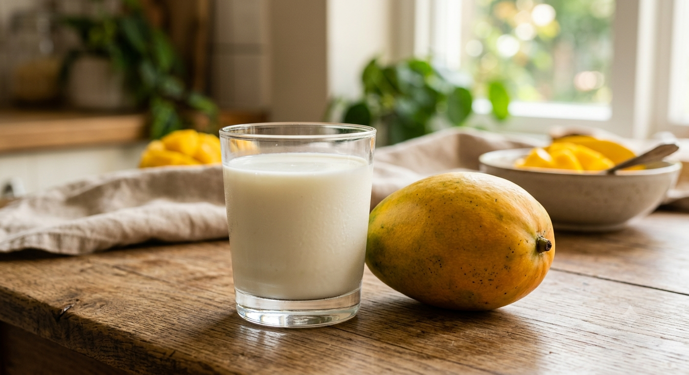

Tomar manga com leite faz mal?
Mito. Essa história nasceu no Brasil colonial. Os senhores de engenho inventaram esse boato para evitar que os escravizados consumissem o leite, que era um produto caro, já que as mangueiras eram fartas na região. É uma combinação perfeitamente saudável (e rende uma ótima vitamina!).